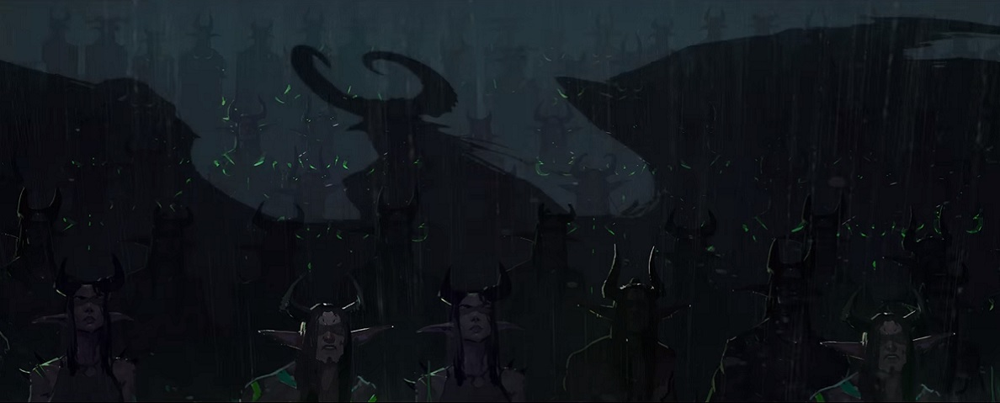

Иллидари
Иллидари – общее название, которое используется как для обозначения единого войска, подвластного Иллидану Ярости Бури в Запределье, так и для конкретного малочисленного ордена, основной составляющей которого являются охотники на демонов. Разные источники указывают, что в состав иллидари входили ночные эльфы, эльфы крови, наги, сломленные, орки Скверны и демоны различных видов. Кроме того, существовали группы, которые считались союзниками иллидари, хотя и не принадлежали к этой фракции. Иллидари проводили операции даже в Азероте, но по большей части работали в Запределье. В момент наивысшей силы армии на всей территории расколотого мира оставалось крайне немного мест, где не замечалась активность иллидари или их союзников.
Когда Альянс и Орда прошли в Запределье через Темный портал, вновь открытый слугами Пылающего Легиона, иллидари стали одним из основных противников для них. Две фракции не знали, что Иллидан и охотники на демонов приняли самое прямое участие в первых битвах против демонов и спасли войска Альянса и Орды от разгрома. Но у них были причины относиться к слугам Иллидана с подозрением и ненавистью: практически в каждой местности Запределья находились невинные, пострадавшие от иллидари тем или иным образом. Хотя истинной целью Иллидана был разгром Пылающего Легиона, для достижения этой цели он применял способы, которые выглядели со стороны сомнительно, включая создание орков Скверны, призывание демонов, сбор древних реликвий и вторжение в Аукиндон.
Конфликты привели к осаде Черного храма, в которой объединились не только Альянс и Орда, но и обитатели Шаттрата, служащие наару. Во время осады было уничтожено значительное количество иллидари, но несколько отрядов в это время находились на Мардуме, где пытались добыть саргеритовый ключ. К смерти Иллидана приложили руки Акама, Майев Песнь Теней и герои обеих фракций. Когда охотники на демонов вернулись с Мардума, чтобы защитить Черный храм, они обнаружили, что война уже проиграна, и были захвачены в плен Стражами. Как и выжившие иллидари, они были помещены в Казематы Стражей, в камерах которых провели последующие годы.
Но несколько отрядов иллидари, включая шиварр, Пеплоустов и наг, удерживали контроль над Мардумом и Молотом Скверны – огромным кораблем Легиона, захваченным во время операции. Когда на Азероте началось новое вторжение демонов через Расколотые острова, Майев Песнь Теней решила освободить охотников на демонов, понимая, что это единственный способ сдержать силы Легиона. Охотники получили свободу, стали союзниками Альянса и Орды и смогли связаться с силами, сохранившимися на Мардуме. Молот Скверны стал новым оплотом, где собрались оставшиеся иллидари. Отсюда новый глава ордена, занявший место в отсутствие Иллидана, руководил операциями на Расколотых островах и пытался продолжить реализацию плана по уничтожению Легиона, который был разработан ещё в Запределье. Иллидан, душа которого оказалась в Круговерти Пустоты, а тело – захвачено демонами, смог связаться с иллидари и дать им инструкции к действию.
Вторжение на Мардум
Следуя приказам Иллидана, охотники на демонов вторглись на Мардум в тот самый момент, когда в Запределье начиналась осада Черного храма силами Альянса, Орды и Шаттрата. Им необходимо было получить саргеритовый ключ, который не только стал бы залогом победы над Легионом, но и являлся единственным способом покинуть этот мир. Передовой отряд уже вступил в бой с Легионом, и Кайн Ярость Солнца предложил присоединиться к нему, чтобы устрашить демонов. Столкновения происходили на хребте Отчаяния, и охотники на демонов, уничтожив своих противников, сменили знамя Легиона на собственное.
Три охотника на демонов отправились на поиски ключа, пока другие остались, чтобы открыть три пары врат Пылающего Легиона. Это позволило бы войскам иллидари, оставшимся в Черном храме, прибыть сюда. Для активации врат нужны были души, и их собрали достаточно, чтобы призвать отряд Пеплоустов. Во главе отряда, который принес также дары от Иллидана, стоял военачальник Гаардун, обещавший помочь занять позиции на вулкане.
На Раскаленном берегу, где находились демоны, называемые тюремщиками, некоторые из охотников на демонов попали в плен, и для их освобождения пришлось найти дополнительные ключи. Для открытия врат, которые позволяли призвать наг из клана Змеиных Колец, потребовалась дополнительная душа, и сломленный-мистик согласился пожертвовать собой. Когда врата открылись, на Мардум прибыли наги, ведомые леди С'Тэно. Прежде чем покинуть Раскаленный берег, охотники на демонов уничтожили инквизитора Зловеша и вытянули силу из его трупа. Это даровало им возможность применять пронзающий взгляд. Джейс Темный Ткач использовал горнило Пустоты, чтобы подсмотреть за лидерами Легиона и узнать, что они задумали. Оказывается, эредары уже начали призывать войска, чтобы напасть на охотников на демонов с тыла и не дать им добраться до вулкана. Местным лидером является королева стаи Тиранна – загадочный демон, внешность которой напоминала паучью.
Мардум после своего раскола, ставший одним из оплотов Пылающего Легиона
На Ставке командирования находились последние врата, которые позволяли призвать шиварр из Черного храма. Хотя призывать их сюда – большой риск, они, несмотря на своё прежнее служение Пылающему Легиону, всё-таки являлись одними из самых сильных союзников Иллидана. Но королева Тиранна что-то сотворила со вратами, и душ нескольких мо'аргов не хватало для их открытия. Пришлось принести в жертву охотника на демонов, потому что только его душа была способна открыть врата. Шиварры во главе с верховной матерью Злобой прибыли на Мардум. Здесь же, на Ставке командования, произошло сражение с Белиашем. Уничтожив его, охотники на демонов получили способность поглощения магии.
На Адском пике, Легион использовал уничтожители – огромные стреляющие орудия, но иллидари прорвались через них и создали свой опорный пункт. Кайн объявил, что необходимо разобраться с войсками демонов на вулкане, прежде чем решаться на штурм Молота Скверны, флагманского корабля королевы стаи. Основными целями стали паучья крепость, Реактор Душ и Кузня Порчи. Пеплоусты, наги и шиварры напали на них.
Джейс Темный Ткач уверял, что на какое-то время почувствовал присутствие демонов где-то над опорным пунктом. Вместе с отрядом бойцом он отправился к пещере на юго-востоке, чтобы проверить её. Хотя там ничего не нашли, Джейс по-прежнему считал, что здесь всё-таки что-то не так. После использования призрачного зрения открылось, что за завалом в пещере прятался отряд демонов. Охотники на демонов ворвались туда и уничтожили демонов вместе с их лидером – повелителем Скверны Кхаза, поглотив его силу.
Иллидари начали нападение и попытались сломать уничтожители. В Реакторе Душ они стокнулись с графом Гнусом и победили его, выпустив поток душ из колодца. Несколько наг попали в плен к генералу Волроту, но охотники на демонов расправились с ним и освободили пленников. От одного из демонов они узнали, что в вулкане прячется мать бесов, которая переписывает тайны Легиона. Корвас Кровавый Шип отправилась туда, чтобы разыскать демона и получить секретные данные. Мать бесов звали Плодовией, и она исполняла нечестивые ритуалы Легиона, после чего записывала всё в свою книгу. Охотники на демонов уничтожили её и получили фолиант тайн Скверны.
Совместными усилиями иллидари разрушили уничтожитель в Кузне Порчи. Верховная мать Злоба вместе с охотниками на демонов убила огромного надзирателя Брутарга. Сражение продолжилось в Проклятой крепости, окутанной паутиной и заполненной пауками. Здесь скрывался король Ворас – спутник Тиранны, и охотники на демонов расправились с ним. Тиранна пообещала отомстить за убийство своего возлюбленного. После этого иллидари разрушили последний уничтожитель Легиона. Вернувшись в лагерь, охотники на демонов использовали фолиант тайн Скверны и стали ещё сильнее. Маннетрель Темная Звезда оказался не в силах сдерживать такую огромную мощь и погиб.
Началось вторжение на Молот Скверны, и охотники на демонов отправились туда на сквернотопырях. Все вместе они напали на королеву стаи Тиранну и, убив её, забрали саргеритовый ключ. Они собрались на нижнем уровне корабля и использовали ключ, чтобы вернуться в Черный храм. Охотники на демонов собрались помочь владыке Иллидану отбросить захватчиков из Азерота и Шаттрата, но обнаружили, что осада уже завершилась разгромом иллидари. Стражи, ведомые Майев Песнь Теней, пленили их и заключили в камеры, расположенные в Казематах на Рассколотых островах.
Легион
Майев Песнь Теней пробудила охотников на демонов, утверждая, что в одиночку им не выбраться из Казематов Стражей. В первую очередь необходимо было освободить Алтруиса Страдальца и Кайна Ярость Солнца. Кайн удивился, увидев, что Алтруис тоже пробужден, ведь тот был врагом Иллидана. Алтруис ответил, что всё ещё верит в дело охотников на демонов, но отказывается слепо подчиняться кому-либо, включая Иллидана. Они оба понимали, что Майев могла освободить их только по одной причине – если Легион вернулся.
В блоке иллидари они начали восстанавливать силы, поглощая души убитых демонов, которые вторглись в Казематы, и освобождать союзников. Они закрыли порталы, через которые проходили демоны, и собрались рядом с Майев. Та заявила, что Гул'дан и демоны не смогли бы сюда пробраться, если бы кто-то из Стражей не предал своих. Предателем оказалась Кордана Оскверненная Песнь, которая вместе с Гул'даном успела похитить тело Иллидана и скрыться в портале. Майев прыгнула в портал вслед за ними, пока охотники сражались с гигантскими призванными демонами. Победив, они поглотили их силу и на сквернотопырях полетели на верхний уровень Казематов.
Они попали в блок, где Стражи пленили демонов. Это место также было охвачено хаосом из-за вторжения. В Каземате Зеркал они столкнулись с демоном по имени Смотрящий, защищенным преградой, которая уничтожалась фокусировкой зеркал. В Каземате Закона скрывался грозный демон Иммолант, полный чистейшей концентрированной энергии Скверны. Победа над ним позволила охотникам на демонов получить новые силы. В Каземате Льда был пленен огромный элементаль Вул'Кан, который оказался слишком сильным. Охотники активировали систему безопасности, чтобы сковать его льдом.
Поднявшись на верхний уровень, охотники оказались в зале, который назывался Судом Стражей. Конфликт между Кайном и Алтруисом достиг пределов, и они начали сражение друг с другом. Охотник на демонов, которого считали новым лидером, выбрал одного из них себе в ближайшие помощники, чтобы закончить пререкания. Для выхода из Казематов оставалось последнее препятствие – предводитель демонов Бастиллакс. Охотники уничтожили его в Чертогах Ночи и забрали его силу. Они вышли из Казематов и встретились с верховным магом Кадгаром, который заявил, что Азероту нужна их помощь. Охотники на демонов осознали, что сотрудничество – единственный способ спасти мир от вторжения, и отправились в Даларан вместе с Кадгаром, где он пообещал дать дальнейшие инструкции.
Возвращение на Мардум
В Даларане охотники на демонов собрались на площадке Краса, расположенной на восточном краю города. Дождавшись своего лидера, который занял эту должность в отсутствие Иллидана, они поняли, что для войны против Пылающего Легиона потребуется более сильное оружие. Когда командир вернулся вместе с артефактом, охотники на демонов сообщили ему, что разбили лагерь недалеко от Площадки Краса, чтобы удобнее следить за перемещениями Легиона. До лагеря можно было добраться обычным планированием на крыльях, если спрыгнуть с Даларана. Джейс Темный Ткач сообщил, что ему удалось связаться с силами иллидари на Мардуме. Они охраняли Молот Скверны в течение многих лет отсутствия охотников на демонов и удерживали его до сих пор.
Верховная мать Злоба перенесла большую часть бойцов из Даларана на Мардум при помощи корабельной системы искажения пространства, но теперь энергии оставалось слишком мало. Артефакт, которым завладел командир, содержал в себе частицу энергии, которая позволила открыть устойчивый портал на Молот Скверны. Для портала также потребовались души демонов, которые охотники подготовили заранее. По приказу командира они принесли их в жертву, и врата активировались. Командир использовал своё оружие, чтобы проложить путь на Мардум.
После перемещения на Молот Скверны верховная мать Злоба поприветствовала старых знакомых. Помощник сообщил командиру, что привести корабль в полную боевую готовность может только обладатель метки владыки Легиона. Такая метка содержалась на оружие, которым завладел глава ордена. Тот прикоснулся к панели управления и принял командование Молотом Скверны на себя. Это позволило призвать на корабль наг из клана Змеиных Колец и Пеплоустов, которых по-прежнему возглавляли леди С'Тэно и военачальник Гаардун.
Помощник сказал, что захват цитадели Легиона дал иллидари ценную добычу, которая находилась в нижнем зале и охранялась бойцами Гаардуна. Военачальник объяснил, что добычей является древнее натрезимское горнило, в котором ковалось лучшее оружие Легиона. Глава ордена прошёл в зал с горнилом и убедился, что сможет усилить свой артефакт с его помощью.
Аллари Пожирательница Душ, встретив командира на выходе из комнаты с горнилом, сообщила, что ситуация на Азероте куда хуже, чем они думали. Иллидари использовали энергию сотен демонических душ, чтобы получить возможность наблюдать за тем, что там происодит. Командир лично заглянул в заряженное горнило Пустоты и увидел Гробницу Саргераса. Ордену нельзя было терять ни минуты. Армии Легиона уже вторглись в Азерот.